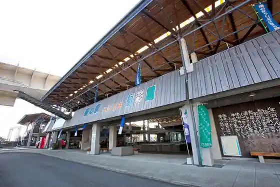
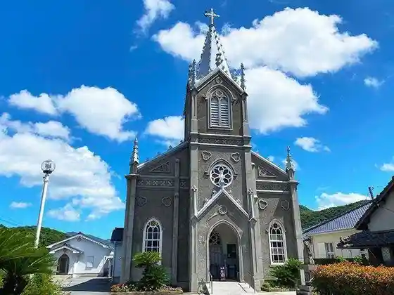
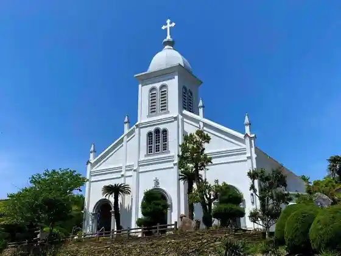
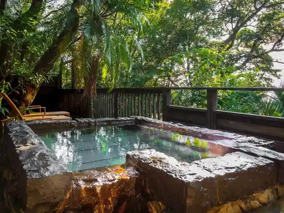

Ushibuka Umi Sai Kan
Amakusa, Kumamoto · 0969-73-3818 · Official / source link

Katorikku Sakitsu Kyokai (Sakitsukyokai)
Amakusa, Kumamoto · 0969-78-6000 · Official / source link

Katorikku Oe Kyokai
Amakusa, Kumamoto · 0969-22-2243 · Official / source link

Ariake Onsen Saza Nami Baths
Amakusa, Kumamoto · 0969-53-1126 · Official / source link
Shimoda Onsen
Amakusa, Kumamoto · 0969-42-3239 · Official / source link

Sumoto Onsen Center Kappa Roman Kan
Amakusa, Kumamoto · 0969-54-5526 · Official / source link
Sogo Koryu Shisetsu Tennen Onsen Manamu Sato
Amakusa, Kumamoto · 0969-76-1526 · Official / source link
Irukauotchingu
Amakusa, Kumamoto · 0969-33-1600 · Official / source link
Nagomi Yado Shinwa So Umi Kokoro
Amakusa, Kumamoto · 0969-22-3653 · Official / source link
Amakusa Shimoda Onsen Gun Ho Kaku Garasha
Amakusa, Kumamoto · 0969-42-3316 · Official / source link
Aji no Yado Kaio Tei
Amakusa, Kumamoto · 0969-42-3211 · Official / source link
Amakusa Shimoda Onsen Boyo Kaku
Amakusa, Kumamoto · 0969-42-3111 · Official / source link
Kutsurogi no Yado Maruko
Amakusa, Kumamoto · 0969-42-3306 · Official / source link
Iga Ya
Amakusa, Kumamoto · 0969-42-3011 · Official / source link
Amakusa Shimoda Onsen Tabi no Yado Yu no Hana
Amakusa, Kumamoto · 0969-42-3180 · Official / source link
Hae Ya (Haiya)
Amakusa, Kumamoto · 0969-79-0858 · Official / source link
Takara Mochi Honpo
Amakusa, Kumamoto · 0969-73-2769 · Official / source link
Isoppu Seika
Amakusa, Kumamoto · 0969-23-2185 · Official / source link
Amakusa Oriibu Sono AVILO
Amakusa, Kumamoto · 0969-32-0366 · Official / source link
Ishiyama Rikyu Go Ashi no Kutsu
Amakusa, Kumamoto · 0969-45-3633 · Official / source link
Amakusa Gyokyo Sakitsu Chokubai Tokoro Kintsu Market
Amakusa, Kumamoto · 0969-79-0333 · Official / source link
Goshora Bussan Kan Shiosai Kan
Amakusa, Kumamoto · 0969-67-1234 · Official / source link
Ebisu Beach
Amakusa, Kumamoto · 0969-64-3111 · Official / source link
Ebisu Zo Park
Amakusa, Kumamoto · 0969-64-3115 · Official / source link
Shirogahama Beach
Amakusa, Kumamoto · 0969-53-1111 · Official / source link
Oni no Shiro Park
Amakusa, Kumamoto · 0969-32-1111 · Official / source link
Jusan Hotoke Park
Amakusa, Kumamoto · 0969-22-2243 · Official / source link
Myoken Ura (Zosan Iwa)
Amakusa, Kumamoto · 0969-23-1111 · Official / source link
Tsuten Park (Ai Yori Aoku) Kinenhi
Amakusa, Kumamoto · 0969-73-2111 · Official / source link
Tomi Yama Suisen Park
Amakusa, Kumamoto · 0969-73-2114 · Official / source link
Tsuru Hayama Park
Amakusa, Kumamoto · 0969-73-2111 · Official / source link
Gion Hashi
Amakusa, Kumamoto · 0969-23-1111 · Official / source link
Ushibuka Haiya Bridge
Amakusa, Kumamoto · 0969-73-2114 · Official / source link
Ushibuka Park
Amakusa, Kumamoto · 0969-73-2111 · Official / source link
Junkyo Park
Amakusa, Kumamoto · 0969-23-1111 · Official / source link
Akinori Tera
Amakusa, Kumamoto · 0969-23-1111 · Official / source link
Amakusa Korejiyo Kan
Amakusa, Kumamoto · 0969-76-0388 · Official / source link
Amakusa Kirishitan Kan
Amakusa, Kumamoto · 0969-22-3845 · Official / source link
Itsuwa Folk History Museum
Amakusa, Kumamoto · 0969-33-1645 · Official / source link
Takahama Yaki Hisashi Ho Kama
Amakusa, Kumamoto · 0969-42-1114 · Official / source link
to Oka Workshop
Amakusa, Kumamoto · 0969-32-2502 · Official / source link
Ushibuka Kaichukoen Gurasubotosabumarin Go
Amakusa, Kumamoto · 0969-73-1173 · Official / source link
San Shima Campground Beach
Amakusa, Kumamoto · 080-8369-7356 · Official / source link
Kurosaki Beach Kurosaki Campground
Amakusa, Kumamoto · 0969-32-1111 · Official / source link
Hondo Beach
Amakusa, Kumamoto · 0969-23-1111 · Official / source link
Odaka Hama Beach
Amakusa, Kumamoto · 0969-76-1111 · Official / source link
Satsuki Beach
Amakusa, Kumamoto · 0969-73-2114 · Official / source link
Hakutsuru Hama Beach
Amakusa, Kumamoto · 0969-42-0407 · Official / source link
Mogushi Beach
Amakusa, Kumamoto · 0969-73-2111 · Official / source link
Oniki Saki Beach
Amakusa, Kumamoto · 0969-73-2111 · Official / source link
Ritsu Beach
Amakusa, Kumamoto · 0969-46-2111 · Official / source link
Oga Se Shogase
Amakusa, Kumamoto · 0969-23-1111 · Official / source link
Ro Gaku Tembo Tokoro
Amakusa, Kumamoto · 0969-23-1111 · Official / source link
Go Ashi no Kutsu Bungaku Promenade
Amakusa, Kumamoto · 0969-42-1111 · Official / source link
Tsuji Shima Furyokuhatsuden Tokoro
Amakusa, Kumamoto · 0969-23-3498 · Official / source link
Kuro Shima Mujin Shima
Amakusa, Kumamoto · 0969-67-2111 · Official / source link
Nigaki Kaseki Park
Amakusa, Kumamoto · 0969-67-2325 · Official / source link
Amakusa Rozario Kan
Amakusa, Kumamoto · 096-942-5259 · Official / source link
Ueda Ie House Ueda Museum
Amakusa, Kumamoto · 0969-42-1114 · Official / source link
Ushibuka Haiya Festival
Amakusa, Kumamoto · 0969-73-2111 · Official / source link
Kaijo Maria Zo
Amakusa, Kumamoto · 0969-76-1111 · Official / source link
Sakitsu Shuraku (Sakitsushuraku)
Amakusa, Kumamoto · 0969-78-6000 · Official / source link
Wakamiya Koen Beach
Amakusa, Kumamoto · 0969-32-1111 · Official / source link
Nishi no Kubo Park
Amakusa, Kumamoto · 0969-23-1111 · Official / source link
Kuratake Shrine
Amakusa, Kumamoto · 0969-64-3111 · Official / source link
Nishidaira Tsubaki Park (Rapyuta no Ki)
Amakusa, Kumamoto · 0969-42-1111 · Official / source link
Chiku no Shima (Gatsu no Shima)
Amakusa, Kumamoto · 0969-73-2111 · Official / source link
Kuroishi Coast
Amakusa, Kumamoto · Official / source link
Tsuji Shima
Amakusa, Kumamoto · Official / source link
Maki Shima
Amakusa, Kumamoto · Official / source link
Kami Kakari Falls
Amakusa, Kumamoto · 0969-46-2111 · Official / source link
Enkyo Tera no Kabutome
Amakusa, Kumamoto · 0969-22-3365 · Official / source link
Perura no Yubune Ai Bo Baths
Amakusa, Kumamoto · 0969-24-2626 · Official / source link
Sakitsu Suwa Shrine
Amakusa, Kumamoto · Official / source link
Roadside Station Amakusa Iruka Center
Amakusa, Kumamoto · 0969-33-1500 · Official / source link
Amakusa Sakitsu Museum Minato Ya
Amakusa, Kumamoto · 0969-75-9911 · Official / source link
Amakusa Bunka Koryu Kan
Amakusa, Kumamoto · 0969-27-5665 · Official / source link
Ichiyama Kujiraya
Amakusa, Kumamoto · 0969-34-1156 · Official / source link
Maruo Yaki
Amakusa, Kumamoto · 0969-23-9522 · Official / source link
HIGH BEACH
Amakusa, Kumamoto · 090-6941-9624 · Official / source link
Roadside Station Miyaji Gaku Kakashi Village
Amakusa, Kumamoto · 0969-28-0384 · Official / source link
Amakusa Ritsu Goshora Kyoryu no Shima Museum
Amakusa, Kumamoto · 0969-67-2325 · Official / source link
Kuratake Saniioto Campground
Amakusa, Kumamoto · 0969-64-3221 · Official / source link
Amakusa Ushibuka Onsen Yasuragi So
Amakusa, Kumamoto · 0969-72-6666 · Official / source link
Amakusa Nishi Coast Holiday Park Furai Bo
Amakusa, Kumamoto · 0969-42-3911 · Official / source link